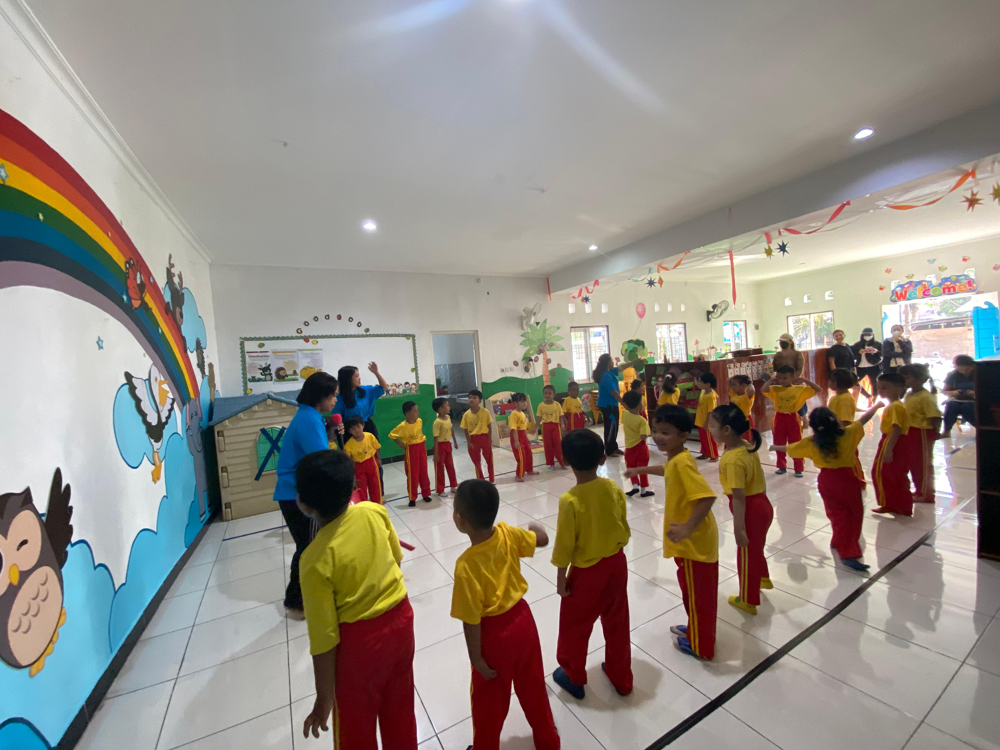
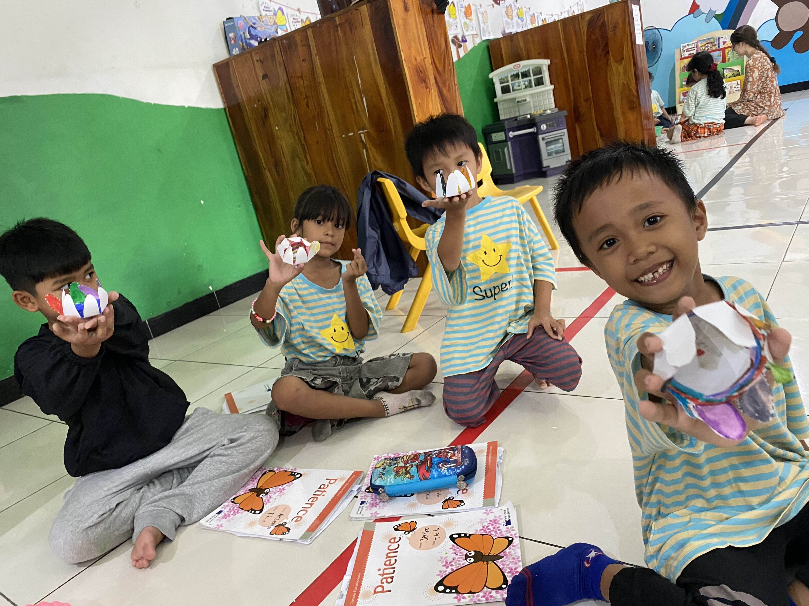
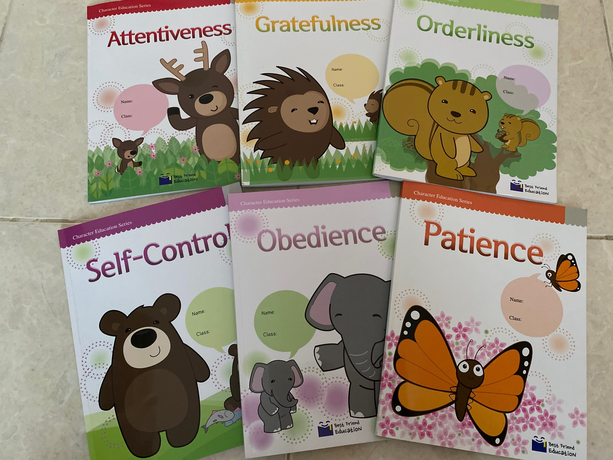
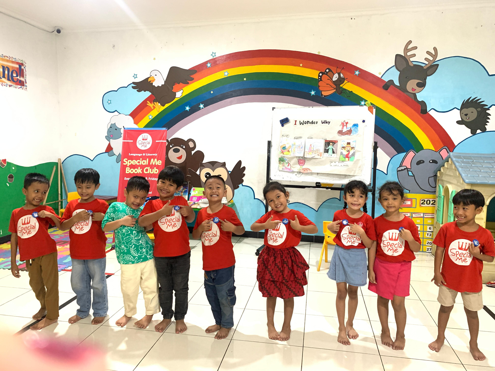
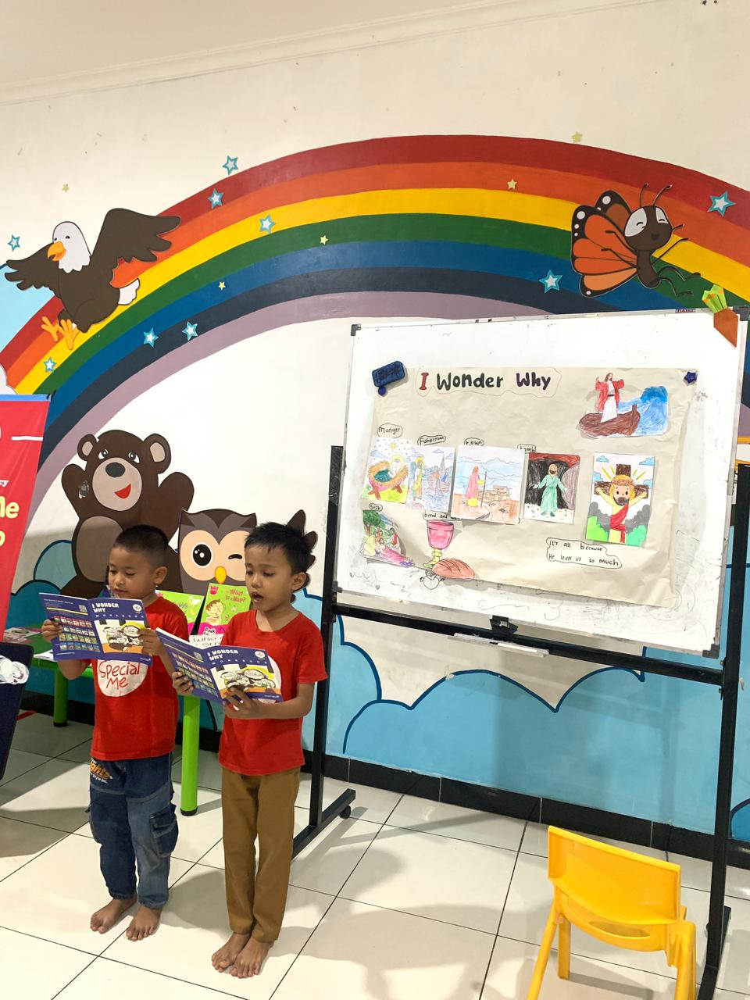
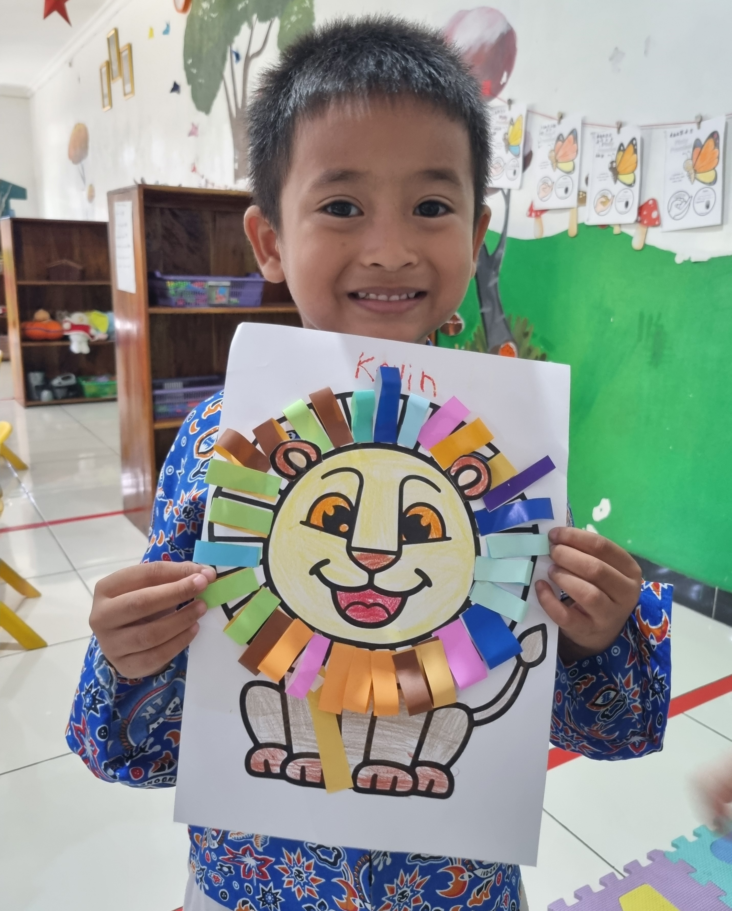
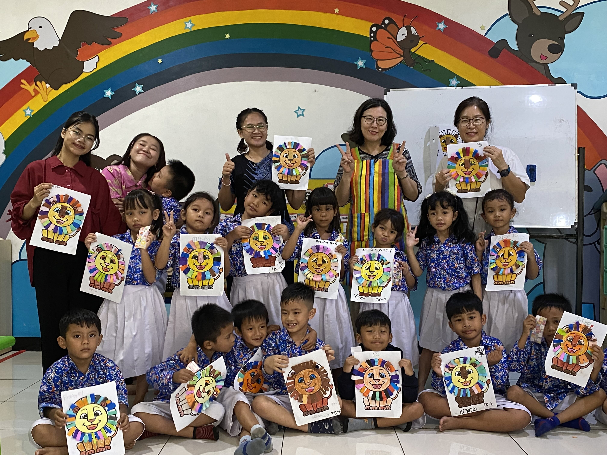

Keunggulan TK Rainbow
Jadwal Harian Sekolah
Ibadah Pagi & Renungan Singkat
Aktivitas Kelas & Pembelajaran Inti
Waktu Istirahat, Makan Snack & Bermain
Program Khusus & Persiapan Pulang
Setiap hari pembelajaran diawali dengan ibadah singkat sebagai bagian dari pembentukan iman dan karakter anak. Melalui pendekatan pendidikan yang holistik, TK Rainbow berkomitmen mengembangkan aspek spiritual, karakter, akademik, kreativitas, dan sosial emosional anak.
Kami memastikan anak-anak siap bertumbuh menjadi generasi yang mengasihi Tuhan, berkarakter mulia, serta mampu menjadi berkat bagi sesamanya.

3 Program Unggulan Utama
1. Pendidikan Karakter
Program utama TK Rainbow yang membentuk karakter anak melalui 11 tema karakter seperti Attentiveness, Gratefulness, Orderliness, Obedience, Self-Control, Patience, Wisdom, dan nilai-nilai positif lainnya. Tujuannya adalah menolong anak bertumbuh menjadi pribadi yang mengasihi Tuhan, menghormati sesama, serta memiliki karakter yang kuat sejak usia dini.


2. Special Me
Program pembelajaran Bahasa Inggris yang menyenangkan, kreatif, dan interaktif melalui kisah-kisah Alkitab serta cerita kehidupan yang membangun nilai-nilai rohani. Tujuannya adalah mengembangkan kemampuan berbahasa Inggris sekaligus memperkenalkan kebenaran firman Tuhan kepada anak.


3. Fun & Creative Art
Program seni kreatif yang mengajak anak bereksplorasi menggunakan berbagai bahan dan media di sekitar mereka. Tujuannya adalah mengembangkan kreativitas, imajinasi, keterampilan motorik, serta rasa percaya diri dalam berkarya.


Punya Pertanyaan tentang Program Kami?
Hubungi kami melalui WhatsApp atau KakaoTalk untuk konsultasi pendaftaran.